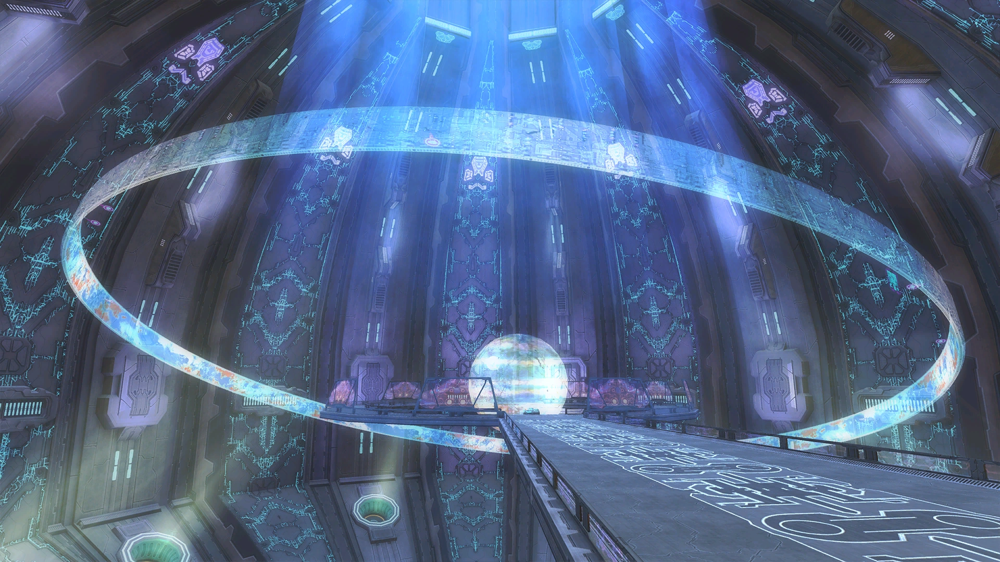
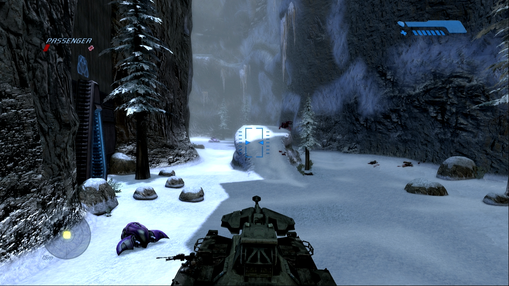

Mergi la inceput
Mergi inapoi
Assault on the Control Room
Aceasta este una dintre cele mai lungi misiuni din joc, având loc într-un peisaj montan
plin de poduri, canioane și baze Covenant. Master Chief se confruntă cu valuri de inamici și
utilizează vehicule precum Scorpion (tanc) și Banshee pentru a naviga pe câmpul de luptă.
În cele din urmă, Chief ajunge la camera de control și o conectează pe Cortana la sistem.
Cortana descoperă informații alarmante despre Halo și îi cere lui Chief să-l găsească pe Keyes,
fără să-i dezvăluie detalii despre ce a aflat.


Urmatorul nivel.